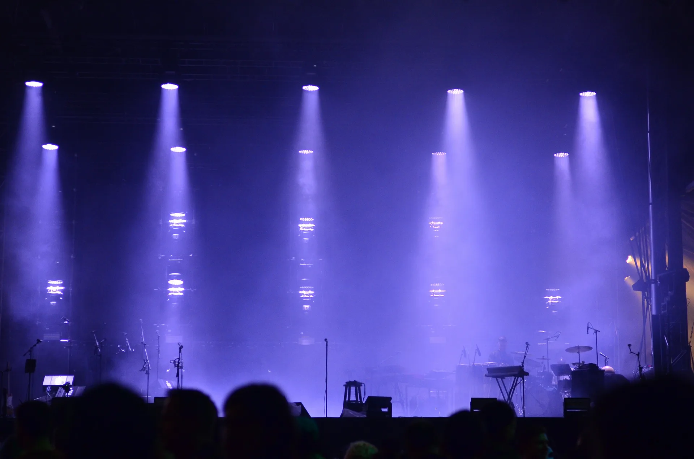

Timing preciso
Construye convocatorias, aperturas, inicios y cierres con cálculos que se actualizan al cambiar la pauta.
T-SHOW / OPERACIÓN EN VIVO
T-Show reúne la escaleta, los horarios y la operación en vivo para que cada equipo llegue al siguiente momento con claridad.

01 — EL PROBLEMA
Planillas, mensajes y cambios de último minuto separan a producción, técnica y escenario. T-Show ordena el tiempo compartido del evento.
02 — LA SOLUCIÓN
Construye convocatorias, aperturas, inicios y cierres con cálculos que se actualizan al cambiar la pauta.
Ordena cada bloque del show para que la información esencial se lea de inmediato.
Sigue el estado del show, mide desvíos y toma decisiones desde una misma referencia.
03 — PARA QUIÉN
04 — EMPEZAR
PREGUNTAS
Crear y ajustar un timing, organizar bloques y utilizar el modo en vivo para seguir una pauta.
No. T-Show funciona desde el navegador.
Sí. Está pensado para cualquier producción con una secuencia, horarios y un equipo que coordinar.
CONTACTO
Cuéntanos qué necesitas coordinar. BaseAndes responderá en contacto@baseandes.com.
T-SHOW